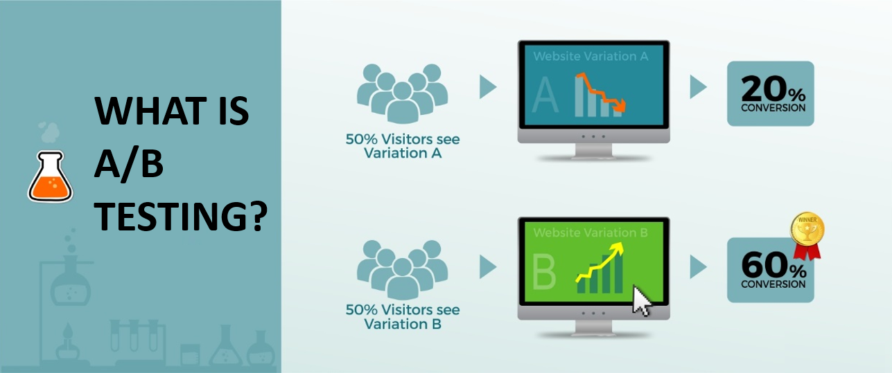
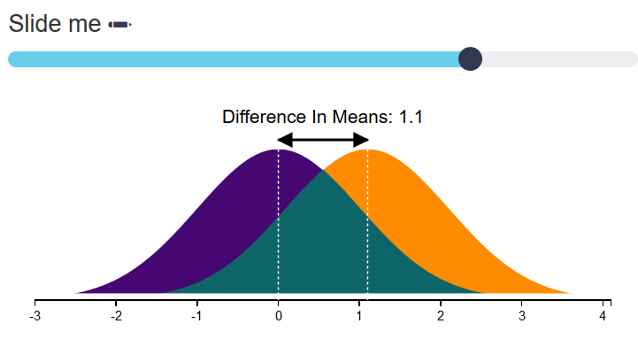
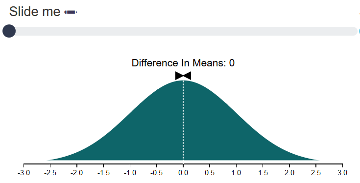

A/B Testing
A/B testing can be used to measure the true impact of user experience/interface changes in digital environments. With any business there are many factors that can contribute to performance, making it difficult to isolate the impact of one change. There are also confounding factors that can effect measurement, including events like seasonal changes, natural disasters, or promotional offers. A/B testing tools are used to serve randomized sets of customers different versions of content, allowing the business to measure the impact that the version differences can have.
Experimental Design and Statistics
Having a true experimental design structure for A/B tests is key to ensuring proper measurement. It's also very important to understand the statistics and assumptions associated with different methodologies. Some key components to consider are:
- Metric type: is it discrete or continuous?
- Hypothesis test to run: what are the assumptions of the test?
- Sample Size: how many users need to be exposed to the content to reach statistical significance?
- Distribution: does the actual distribution of the test results fit with the assumed distribution of the test statistic?
- Outliers: are there users who are skewing the results of the data?
Example
Using an example, imagine you have two variations of a website, Variation A and Variation B. Variation A is what customers are accustomed to seeing when the visit the site and Variation B has changes in the checkout process. We will use an A/B testing tool to randomly serve Variation A to half the population, and Variation B to the other half. We will then use the metric 'Average Revenue Per Visitor' to measure the performance, and a T-Test to test the null hypothesis that there is no difference in Average Revenue Per Visitor between the variations.
What is Difference in Means?
In A/B testing, difference in means is the observed difference in performance between A and B. In marketing this is sometimes called “lift” and in academia this is sometimes called “effect size”. The term effect size can refer to a standardized measure of effect (such as r, Cohen's d, or the odds ratio), or to an unstandardized measure (e.g., the difference between group means or the unstandardized regression coefficients). Standardized effect size measures are typically used when:
- the metrics of variables being studied do not have intrinsic meaning (e.g., a score on a personality test on an arbitrary scale),
- results from multiple studies are being combined,
- some or all of the studies use different scales, or
- it is desired to convey the size of an effect relative to the variability in the population.
What is Sample Size?
Sample size is the number of visitors in the A/B test. Intuitively, we sense that the larger the sample size the less likely A will outperform B (or vice versa) just by chance. People use sample size to judge whether they should believe A is actually better than B or dismiss the results as due chance. So, everyone likes to know the sample size.
What are the A/B Testing Outcomes?
Positive Effect
As an example, let’s look at the following A/B results; Group A (test): 22.6 Revenue Per Customer and Group B (control): 21.5 Revenue Per Customer. The data suggests that over many visits, Group A will have 22.6/21.5 – 1 = 5.1% more Revenue Per Customer. The difference in means would equal 1.1. In this example, let’s say the sample size would be 40. It’s relevant for the confidence you should have regarding chance effects. Variances should be equal as part of the T-Test assumptions. While Group A outperformed Group B (control) in this test of 40 visits, users were given A or B by a simple digital flip of the coin. Given this element of randomness, it’s possible that A just happened to get more users who would’ve converted whether they got A or B.

Neutral Effect
As an example, let’s look at the following A/B results; Group A (test): 21.5 Revenue Per Customer and Group B (control): 21.5 Revenue Per Customer. The data suggests that over many visits, Group A will have 21.5 /21.5 – 1 = 0% more Revenue Per Customer. So the difference in means is 0%. In this example, the two groups have no detectable difference in performance as illustrated by the graphs.

Negative Effect
In this visual, we do not allow the control and treatment groups to toggle performance results. In other words, we constrain the visuals to only display positive or neutral effects.
References:
https://en.wikipedia.org/wiki/Effect_size#Population_and_sample_effect_sizes
http://www.statisticshowto.com/mean-difference/